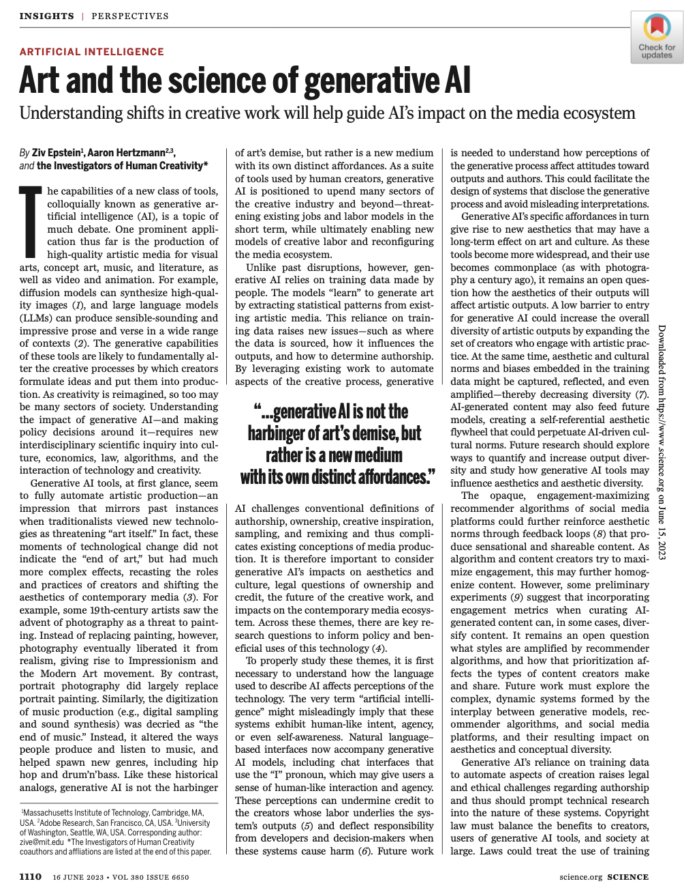

Shifts in Culture & Aesthetics

Generative AI is a newly emerging artistic medium, with its own distinct affordances. These affordances interact with social media platforms in complex and novel ways.
Understanding shifts in creative work will help guide AI’s impact on the media ecosystem

AI systems increasingly have the capability to produce high-quality artistic media such as visual arts, music, fiction, literature, and video/animation. These new capabilities introduce foundational concerns and consequences for the governance and creativity of digital media, and have received enormous amounts of attention and public debate. In a massive interdisciplinary collaboration between 14 researchers across numerous institutions, we rectify naive misconceptions and offer key research directions to inform policy and beneficial uses of this technology.
üìÑ Read our 2-page perspective in Science
üìÑ Read our 23-page white paper on arXiv
In particular, we trace four primary areas for the societal impact of generative AI and how to center human agency in each: the economics of the creative industry, attribution+ownership, aesthetics and news (see below).
Generative AI is a newly emerging artistic medium, with its own distinct affordances. These affordances interact with social media platforms in complex and novel ways.
Today's copyright laws likely will not adequately apportion valuable ownership rights among all participants involved in the production of generative AI, including artists on whose work these systems are trained, but instead may favor the end-user.
Employment for artists may rise or fall depending on how AI tools interact with other parts of the creative process. If AI makes art cheaper, then demand for artistic outputs may rise thus supporting more workers and, possibly, workers with less training than today’s art professionals.
As the cost and time to produce media at scale decreases, the media ecosystem may become vulnerable to AI-generated misinformation through the creation of synthetic media, particularly media that provides probative evidence for claims.
The very term “artificial intelligence” might misleadingly imply that these systems exhibit human-like intent, agency, or even self-awareness. Natural language– based interfaces now accompany generative AI models, including chat interfaces that use the “I” pronoun, which may give users a sense of human-like interaction and agency. These perceptions can undermine credit to the creators whose labor underlies the system’s outputs and deflect responsibility from developers and decision-makers when these systems cause harm.
In the face of this strangeness of AI and its serious potential for societal harms, how can generastive AI be a distinct artistic medium with its own affordances? Artists are are often at the vangaurd of technological change, experimenting with the new affordances of a technology, and exploring the ethics and politics of its use. Below is an artwork "All watched over by machines of loving grace" by co-author Memo Akten about our complicated relationship with technology: